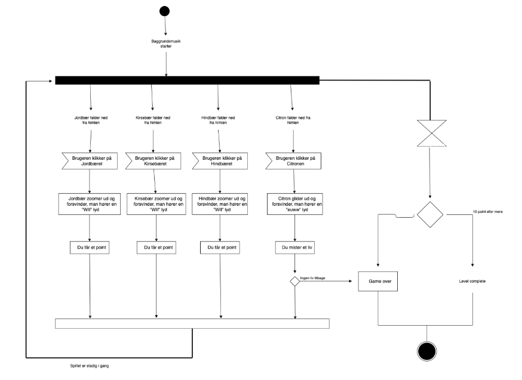
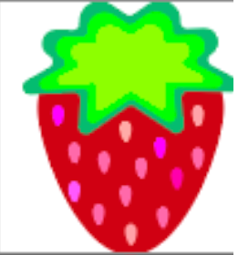
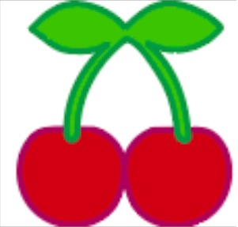
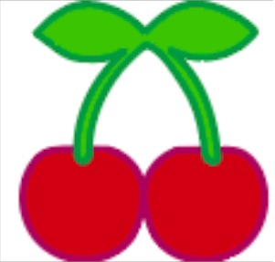
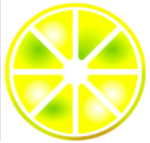
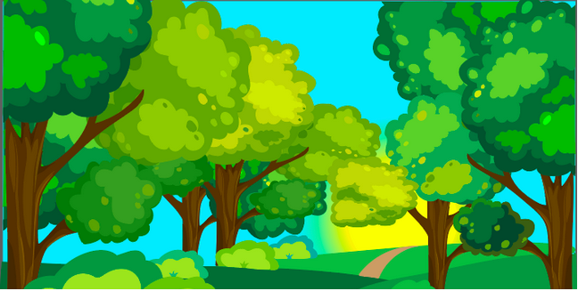
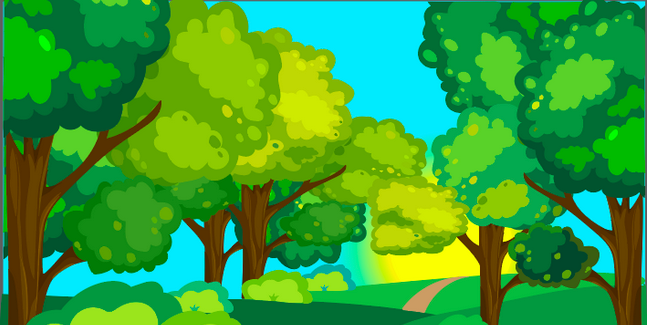

I løbet af vores emne "Animation", lavede vi vores eget spil.
Vi startede fra bunden
med diverse skitser og idégenerering i forhold til hvilket slags spil, og hvilke elementer vi
ville lave.
Jeg valgte at lave et "Juice spil", hvor man skulle "presse" juicen sød
ved at vælge søde frugter, såsom jordbær, kirsebær og hindbær. Derimod skulle man undgå at vælge den
sure frugt,
som er citronen
Statemachine diagram
Vi lavede et state machine diagram, som viser overordnet hvad der egentlig sker i spillet.
Man kan se hvad der sker hvis man klikker på en "god" eller på en "dårlig" figur.
Gode elementer:
 

Dårligt element:
Spilskærme
 
